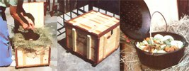

PHOTOS BY EARL P. ARNOLD
LEFT: Heat the dish to boiling in a Dutch oven (or a similar heat-retaining pot) and nestle it into a hay-packed box (such as the attractive custom?built container shown in the photo). CENTER: When the pot is in place, cover it with a hay-filled pillow for additional insulation, close the box up, and wait. You can ""plan ahead"" with your cooker, to prepare fancy meals and keep your days free. RIGHT: And there you have it, a delicious slow?cooked meal fit for ?an energy-conserving king!